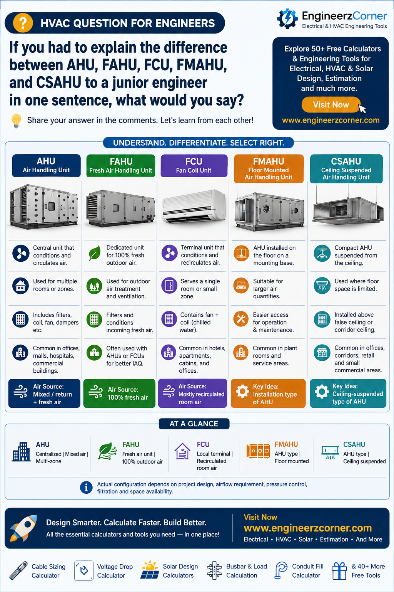

These five terms get used almost interchangeably on site, but they're answering three different questions: what does the unit do, how is it installed, and where does it sit in the system. Sorting them along those three axes makes the whole group much easier to keep straight.

AHU, FAHU, FCU, FMAHU, CSAHU compared — function, air source, installation type and typical use.
1. AHU — Air Handling Unit
The central workhorse. An AHU conditions air — usually a mix of return air and fresh air, as the design calls for — through filters, a cooling coil, a fan section and dampers, then delivers it to multiple rooms or zones through ductwork. It's typically installed in a plant room, service floor or terrace enclosure, and it's the default unit behind offices, malls, hospitals and general commercial buildings.
Air source: mixed — return air plus fresh air.
2. FAHU — Fresh Air Handling Unit
A dedicated unit for treating outdoor air only, normally handling 100% fresh air rather than a mix. It filters and conditions ventilation air before it ever reaches an AHU or FCU, and its main job is maintaining indoor air quality and positive building pressure. FAHUs are commonly paired with AHUs or FCUs rather than working alone.
Air source: 100% fresh air.
3. FCU — Fan Coil Unit
A terminal unit serving a single room or small zone — just a fan and a chilled-water coil, mainly recirculating room air rather than treating outdoor air. Fresh air, when required, is usually supplied to it separately from a FAHU. FCUs are the standard choice in hotel rooms, apartments, cabins and small offices.
Air source: mostly recirculated room air.
4. FMAHU — Floor Mounted Air Handling Unit
Not a different function at all — an FMAHU is simply an AHU installed on the floor or a housekeeping base. Floor mounting suits larger air quantities and gives easier access for maintenance, which is why FMAHUs are common in plant rooms and dedicated service areas.
Key idea: installation type of an AHU, not a separate category of unit.
5. CSAHU — Ceiling Suspended Air Handling Unit
The other installation variant: a compact AHU suspended from the ceiling, above a false ceiling or corridor space, rather than sitting on the floor. It's the choice where floor space is limited, typically at lower or medium capacity compared with a large floor-mounted AHU, and shows up often in offices, corridors, retail and small commercial areas.
Key idea: ceiling-suspended installation type of an AHU.
Quick understanding
What air the unit handles and how it's treated — mixed return/fresh air for an AHU, 100% fresh air for a FAHU.
Both are AHUs. FMAHU is floor-mounted, CSAHU is ceiling-suspended — the difference is where the box sits, not what it does.
FCU sits apart from all four: it's a room-side terminal unit, built around a fan and coil rather than the full filter/coil/fan/damper stack of an AHU, and it mainly recirculates room air rather than treating fresh air on its own.
Key takeaways
- ✓AHU = central unit, mixed air, serves multiple zones through ductwork.
- ✓FAHU = dedicated 100% fresh-air treatment, usually paired with an AHU or FCU.
- ✓FCU = single-room terminal, mostly recirculated air, fresh air supplied separately.
- ✓FMAHU and CSAHU are the same thing as an AHU — floor-mounted vs. ceiling-suspended.
- ✓Actual configuration on any given project depends on airflow requirement, pressure control, filtration and available space.